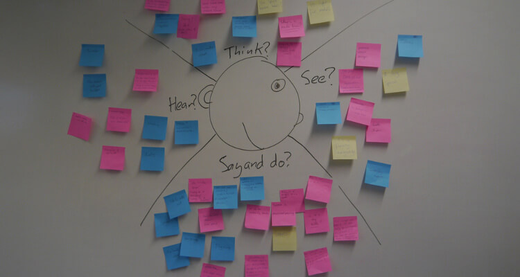

(Picture from UX Matters)
What Is Empathetic Design?
The creation of empathetic designs involves identifying, understanding and addressing user or customer needs in the environment that they use or operate a particular product or service. Quite plainly, being empathetic is to understand and share the feelings of another. This is a concept that can be extended to designing. Only when the designer truly understands the user’s feelings and concerns while using a product, will he or she be able to implement what is necessary to ensure the best user experience possible.
Being In The Users' Shoes
Users sometimes do not know what they seek. They have a vague idea of what they want, but do not always know how to get there. Using an emphatic approach to designing solutions for them can help a designer create more than just a mere solution. It can potentially lead to new opportunities that were not known of before. This is especially true in the case of a new technological product where market research will have its limitations.
Users sometimes have difficulties trying to explain what their needs are. This is when designers take up the responsibility of helping them clearly define their goals, as well as how to achieve them.
An Empathy Map is a great tool that can get teams start thinking about their users' context and accordingly empathize with their current experiences.
Observing a user using the product in his or her natural environment, however, can be quite enlightening. A designer may discover that users perhaps decide to use the product for some other purpose and not for the one it was designed for. A user could also combine different products together, and observing all of these helps open the designer’s mind to new possibilities. This eventually can lead to entry into new markets as well as new users.
The Case Of Contextual Inquiries
Karen Holtzblatt and Hugh Beyer emphasize a similar concept called "Contextual Inquiry" in their book Contextual Design: Defining Customer-Centered Systems (Interactive Technologies), which essentially involves getting “data from users in context: while they work at real tasks in their workplace” (Holtzblatt, Beyer, 1993). There is, however, a subtle difference between empathetic design and contextual inquiry. Contextual Inquiry allows the interviewer to interrupt and ask the user questions along the way, while the emphatic approach stresses more on allowing the user to freely use the product or design in his or her natural environment and emphasizes strong observation from people with different backgrounds so that different perspectives are brought to the table.
Empathy is best achieved when designers closely observe the users live, work, and/or use a particular product in their most natural environment. No distractions, and preferably no knowledge of any observation taking place.
Creating a design with such an approach can be very advantageous, as it gives users not just a design, but an experience. Any user would prefer being understood and served than just being served blindly. It helps designers understand the users in a much more real way, which is ultimately reflected in the design. From a competitive standpoint, it also allows a designer or manufacturer to focus on the what the users have "not asked for" and yet provide it to them, instead of waiting till their competition does it and become the market leader in their stead.
Striking A Balance
As a designer, one must be careful to strike the right balance between emphatic design and market research. Limitations imposed by time, budget and even the number of users available for research can present challenges in designing optimal products or solutions. Striking the right balance while giving customers what they want and more, is what a designer must strive for.